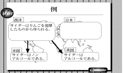

<html>
<head>
<title> Slide No.3 </title>
</head>

<frameset rows="350,*">

<noframes>
<body>
<a href="GIF/slide3.GIF"></a>

<a href="AU/voice3.au">
	</a>[156K]<p>
<!--		-->
ところが、「世界は広い！」と申しましょうか、旅行などすると、<br>
<blink> 西洋では「サイダーはりんごを発酵したものから作られて」</blink> <br>
いて、更に <br>
<blink> 英国では「サイダーはアルコールです」</blink> が、<br>
<blink> 米国では「サイダーはノンアルコールである」</blink> <br>
ということを知ることになります。<p>
<!--		-->

<hr>
<a href="slide4.html" target="_top">
	次の OHP へ</a><br><br>
<a href="slide2.html" target="_top">
	前の OHP へ</a><br><br>
<a href="HomePage.html" target="_top">
	OHP の一覧へ</a>
</body>
</noframes>

<frame src="slidebutton3.html">
<frame src="senslide3.html">

</frameset>

</html>